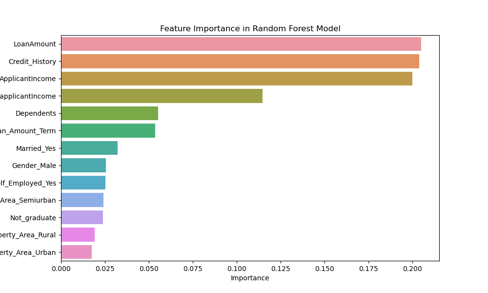

Introduction
Loan approval predictor analysis the customers historical data,
machine learning algorithms, and statistical techniques to build a model
that can predict whether a loan application is likely to be approved or rejected.
This analysis can help financial institutions to automate and optimize their loan eligibility process,
reduce manual effort, and make more consistent and data-driven loan approval decisions.
It can also help to minimize the risk of approving loans that may default,
ultimately improving the overall efficiency of the lending process.
Loan Approval Prediction analysis:
Data preprocessing
This involves cleaning, transforming, and preparing the data for analysis.
Such as handling missing values, converting categorical variables into numerical format, and addressing
inconsistent data.
Exploratory data analysis(EDA):
This involves exploring the distribution, correlation, and relationship of the variables, identifying
outliers, and visualizing the data.
Feature engineering:
This involves selecting, creating, and transforming the features that are relevant and meaningful for the
prediction task.
Model building:
This involves choosing, training, and evaluating the machine learning algorithms that can best fit the data
and perform the prediction task.
Model prediction:
This involves using the trained model to make predictions on new or unseen data, such as the test dataset.
Libraries:
Some of the tools and libraries that can be used for loan approval predictor analysis are Python,
scikit-learn, pandas, numpy, matplotlib, seaborn, etc.
Random Forest Feature Importance:
It uses Random Forest Model to analysis and predict on the loan approval status.
Some of the key Features which impacts model decision making:
Applicant income
Credit history
Loan Amount
Applicant income
coapplicant income
Loan Amount term
Dependents
